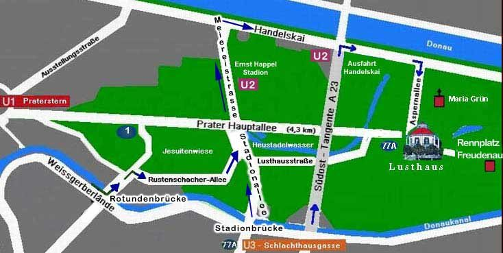

Mit dem Auto
Die Zufahrt zum Lusthaus ist derzeit ausschließlich über den Handelskai – Aspernallee möglich. Parkplätze sind jederzeit in ausreichender Anzahl rund um das Lusthaus vorhanden.
Kontakt & Anfahrt
Die Hauptallee läuft zwischen ihren Kastanienbäumen pfeilgerade vom Praterstern bis zum Lusthaus – ein optischer Kanonenschuss ins weite Grün. Zehn Fahrminuten von der Innenstadt, Parkplätze rund ums Haus.
Dr. Helmut Raftl
Freudenau 254
A-1020 Wien
Tel.: +43 1 728 95 65
Fax: +43 1 253 303 313 17
E-Mail: office@lusthaus-wien.at
| Montag | 12:00 – 21:00 |
|---|---|
| Dienstag | Ruhetag |
| Mittwoch | Ruhetag |
| Donnerstag | 12:00 – 21:00 |
| Freitag | 12:00 – 21:00 |
| Samstag | 12:00 – 17:00 |
| Sonn- & Feiertag | 12:00 – 17:00 |
Veranstaltungen jederzeit. Da wir häufig ausgebucht sind oder wegen Veranstaltungen geschlossen bleiben, ersuchen wir um Tischreservierung.
Schematische Darstellung – keine maßstabsgetreue Karte.

Anfahrt
Natürlich führen noch viele schnelle, abenteuerliche, entspannende oder sportliche Wege hierher – mit der Liliputbahn, mit dem Vierrad, der Legende nach sogar mit dem Hundeschlitten. Doch nur der Versuch zählt am Schluss.
Die Zufahrt zum Lusthaus ist derzeit ausschließlich über den Handelskai – Aspernallee möglich. Parkplätze sind jederzeit in ausreichender Anzahl rund um das Lusthaus vorhanden.
U3 Station Schlachthausgasse oder U2 Station Donaumarina, weiter mit dem Autobus der Linie 77A direkt zum Lusthaus.
Der Spaziergang von der U1 Praterstern oder von der Endstation der Straßenbahnlinie 1 führt durch die Fluren des Praters, vorbei an Jesuitenwiese und Heustadlwasser mit seinem Bootsverleih.
Mit dem Fiaker geht es auf Kaisers Spuren – nach Wunsch direkt vom Hotel. Bei den legendären Fiakerrennen entlang der Hauptallee wurden Rekordzeiten von unter 19 Minuten gefahren.
Neu: Kontaktformular
Für Fragen zu Reservierungen, Festen, Torten oder zur Kaiserloge. Wir melden uns zurück – bei Anfragen zu Veranstaltungen gerne mit einem ersten Vorschlag.
FAQ
Ja, Parkplätze sind jederzeit in ausreichender Anzahl rund um das Lusthaus vorhanden.
Das Restaurant bietet Platz für Anlässe mit bis zu 200 Personen, dazu kommen 120 Sitzplätze auf der teilweise überdachten Terrasse und 50 Sitzplätze am Balkon. Die Laterne im Turm fasst 2 bis 12 Personen.
Die Kaiserloge am Rennplatz Freudenau – fünf Minuten vom Lusthaus – kann für Empfänge und Feste bis zu 200 Personen gemietet werden. Miete auf Anfrage; das Catering erfolgt auf Wunsch aus der Lusthausküche.
Ja. Hochzeits- und Geburtstagstorten kommen aus der hauseigenen Patisserie, nach eigenen Rezepten.
Auf der Karte stehen etwa Erbsenrisotto mit Ziegenfrischkäse und Schwammerlgulasch; bei Buffets sind Risotto nach Saison und Gemüsecurry auch vegan möglich, dazu der vegane Apfelstrudel mit Zimtrahm.